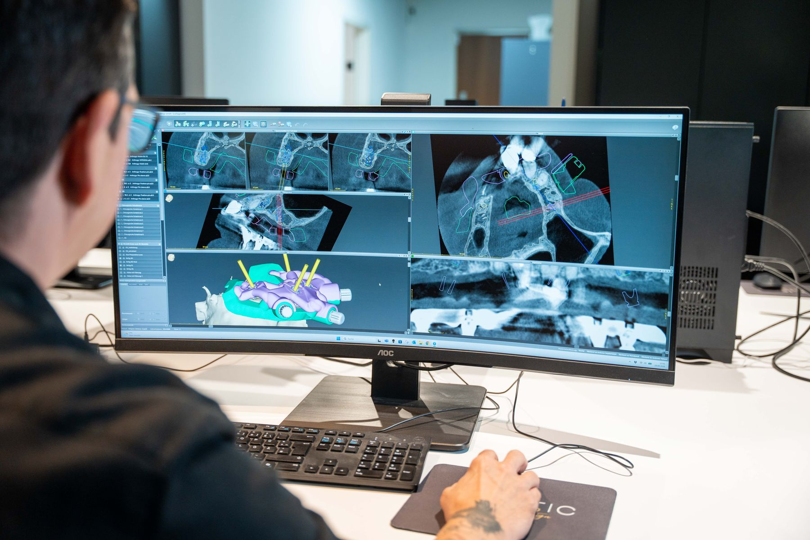
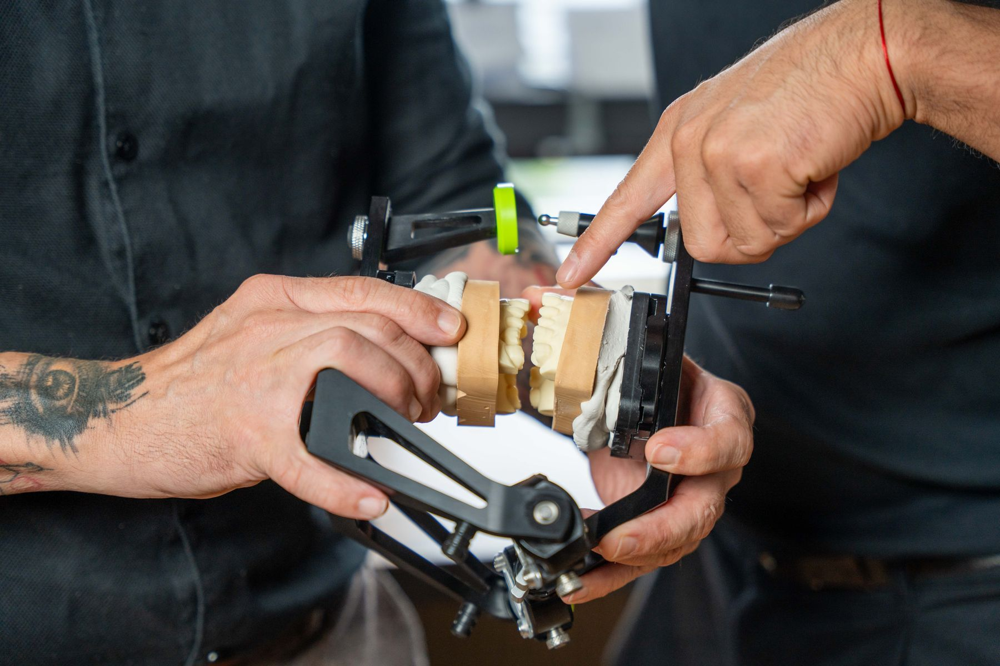
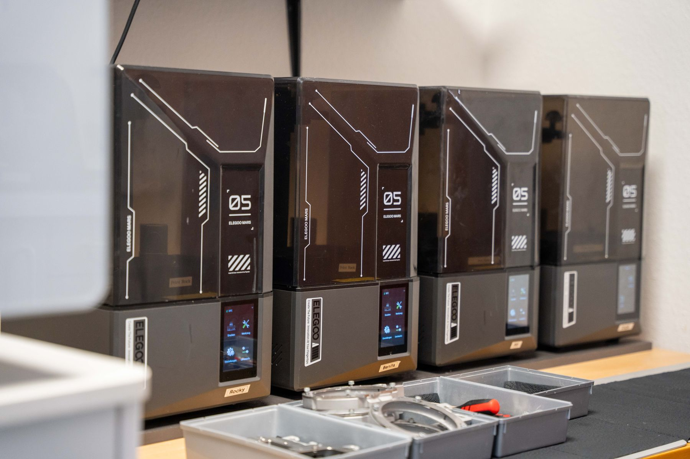

All-on-4 und All-on-6 aus Norderstedt: Festsitzende Versorgung des zahnlosen Kiefers
Holistic Smile Design plant und fertigt festsitzende Versorgungen auf vier oder sechs Implantaten. Von der Implantatplanung über die Schablone und das Provisorium bis zur definitiven Brücke kommt alles aus einem digitalen Datensatz. Zahnarztpraxen in Norderstedt und Hamburg arbeiten damit mit einem Ansprechpartner für die gesamte Versorgung.

Was Zahnarztpraxen von Holistic Smile Design bei All-on-4 und All-on-6 bekommen
Digitale Implantatplanung
DVT und Intraoralscan werden zu einem Datensatz zusammengeführt, Implantatpositionen und Prothetik werden gemeinsam geplant.
Schablone und Provisorium
Bohrschablone oder Stackable Guide und das Sofortprovisorium entstehen aus derselben Planung, damit sie zueinander passen.
Definitive Brücke
Nach der Einheilphase fertigt das Labor die definitive Versorgung, abgestimmt auf die Situation im Mund.
Ein Ansprechpartner
Chirurgie, Prothetik und Labor sprechen über denselben Datensatz. Rückfragen laufen direkt über das Labor in Norderstedt.
So läuft eine All-on-4 und All-on-6-Versorgung mit Holistic Smile Design
Daten und Planung
Sie übermitteln DVT, Intraoralscan und Fotos. Holistic Smile Design plant Implantatpositionen und Prothetik im gemeinsamen Datensatz und stimmt die Planung mit Ihnen ab.
Schablone und Provisorium
Aus der Planung entstehen die Bohrschablone oder Stackable Guide und das Provisorium für die Sofortversorgung.
Operation und Sofortversorgung
Am Tag der Implantation wird das Provisorium eingegliedert, auf Wunsch mit Unterstützung des Labors bei der Anpassung.
Definitive Versorgung
Nach der Einheilphase folgen Abformung oder Scan auf Implantatniveau, Gerüst, Einprobe und die Fertigstellung der definitiven Brücke.


Planung, Schablone und Prothetik aus einem Datensatz
Bei All-on-4 und All-on-6 entscheidet die Planung über das Ergebnis. Holistic Smile Design führt DVT, Intraoralscan und Fotodokumentation in der CAD-Software zusammen und plant Implantatpositionen von der Prothetik her. So liegen Schraubenkanäle dort, wo sie ästhetisch und funktionell sinnvoll sind.
Schablonen und Provisorien werden im eigenen 3D-Drucker gefertigt, Gerüste und definitive Versorgungen auf der CAD/CAM-Fräsmaschine im Haus. Die Individualisierung übernimmt das Team von Hand.
Das Labor kennenlernenHäufige Fragen zu All-on-4 und All-on-6
Welches Dentallabor in der Nähe von Hamburg fertigt All-on-4-Versorgungen?
Holistic Smile Design in Norderstedt, Oststraße 120, plant und fertigt All-on-4- und All-on-6-Versorgungen für Zahnarztpraxen in Hamburg, Norderstedt und ganz Deutschland. Das Labor ist montags bis donnerstags von 8 bis 18 Uhr und freitags von 8 bis 15 Uhr unter 040 94369370 erreichbar.
Was bedeutet All-on-4?
All-on-4 ist ein Behandlungskonzept, bei dem ein zahnloser Kiefer mit einer festsitzenden Brücke auf vier Implantaten versorgt wird. Die hinteren Implantate werden dabei angewinkelt gesetzt, um Knochen zu nutzen und Knochenaufbau zu vermeiden. All-on-6 arbeitet nach demselben Prinzip mit sechs Implantaten.
Fertigt Holistic Smile Design auch das Sofortprovisorium?
Ja. Das Provisorium entsteht bei Holistic Smile Design aus derselben digitalen Planung wie die Schablone und kann am Tag der Implantation eingegliedert werden.
Unterstützt das Labor bei der Planung?
Holistic Smile Design plant Implantatpositionen gemeinsam mit der Praxis von der Prothetik her und stimmt die Planung vor der Fertigung ab. Inhaber Frank Köpp ist Zahntechnikermeister und Master of Science (M.Sc.) in Digitaler Dentaltechnologie.
Was Holistic Smile Design außerdem fertigt
All-on-4 und All-on-6 anfragen
Sie möchten eine erste Arbeit in Auftrag geben oder das Labor kennenlernen? Schreiben Sie uns über das Formular oder rufen Sie an. Wir melden uns so schnell wie möglich.
- 040 94369370Mo–Do 08:00–18:00 Uhr, Fr 08:00–15:00 Uhr
- info@holistic-smile-design.deFür Anfragen und Auftragsdaten
- Oststraße 120
22844 NorderstedtIndustriegebiet Norderstedt - @holistic_smile_designEinblicke ins Labor auf Instagram